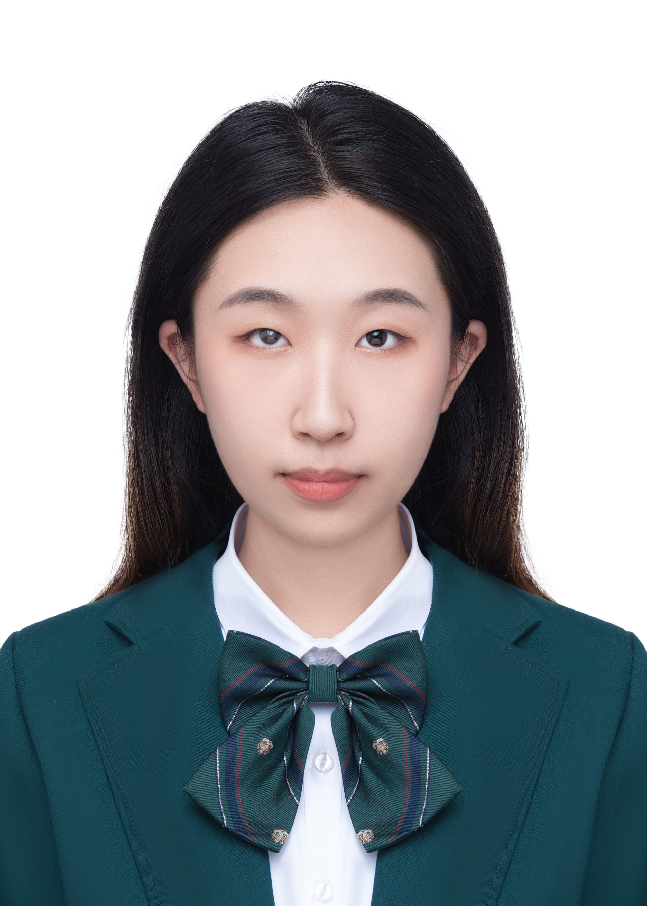

江西卫视：把社会议题转化为节目讨论度与口碑成长
围绕婚恋节目按职业、地域、婚恋观建立嘉宾筛选维度，设计"婚俗痛点30问", 精准捕捉"天价彩礼""姐弟恋"等社会热点，增强节目公共讨论价值。
+16%
豆瓣评分环比提升
2 个
相关话题上热搜
英国利兹大学文化、创意与创业硕士。深耕新媒体运营、内容策划与品牌传播， 曾参与江西卫视、阿里巴巴优酷、南昌人社中心等多个项目，具备商业思维与跨文化协作能力， 熟悉 AI 工具应用与数据分析。

围绕婚恋节目按职业、地域、婚恋观建立嘉宾筛选维度，设计"婚俗痛点30问", 精准捕捉"天价彩礼""姐弟恋"等社会热点，增强节目公共讨论价值。
围绕《这！就是街舞》《甄嬛传》等高热 IP 拆分粉丝兴趣点，通过三时段分层测试与 A/B 测试， 识别晚 6 点互动峰值，设计直播观影 + 弹幕 + 抽奖一体化体验。
独立运营抖音、小红书及公众号矩阵，结合图文、短视频与直播引流，拓展并维护 B 端企业资源， 审核招聘需求文档，提升岗位与平台匹配度，形成校园招聘转化闭环。
从内容运营走向产品思维。围绕 AI 问答与内容生成场景分析用户需求并设计交互路径， 使用腾讯云 CodeBuddy 搭建 AI 问答网站原型，建立"曝光-互动-转化"指标拆解模型。
2023.09 — 2024.11 · 英国
2019.09 — 2023.06 · 中国
参与电影《酱园弄》官方媒体发布会，辅助法国电影公司华人记者完成录音与摄影，协助跨国文化传播。
协助放映 10 部电影，维护观影秩序，与国际团队合作，展示沟通与协调能力。
负责会场 20 位 KOL 团队资格核验、入场手环发放与签到，协助官方团队完成素材拍摄。
一对一负责艺人团队接待，对接司机与经纪人，保障彩排试音与演出顺利进行，获高度评价。